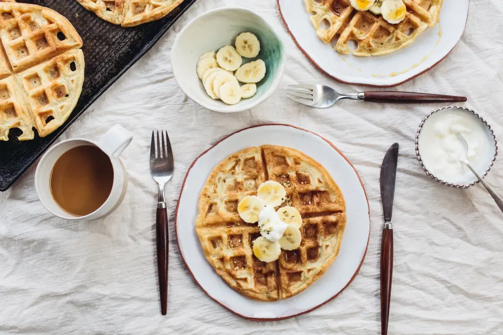

Best Belgian Waffles

Ingredients
- 2 cups flour
- 4 teaspoons baking powder
- 1/2 teaspoon salt
- 1/4 cup sugar
- 2 eggs
- 1/2 cup vegetable oil
- 2 cups milk
- 1 teaspoon vanilla
Directions
- Oil the waffle maker.
- Sift the dry ingredients together in a large bowl.
- In separate bowl, separate egg whites and beat until stiff peaks form
- In separate bowl, mix together the egg yolks, milk, oil, and vanilla, stir slightly.
- Add to dry ingredients and mix well.
- Fold in egg whites.
- Cook in waffle iron on medium-high heat for around 5-10 minutes.